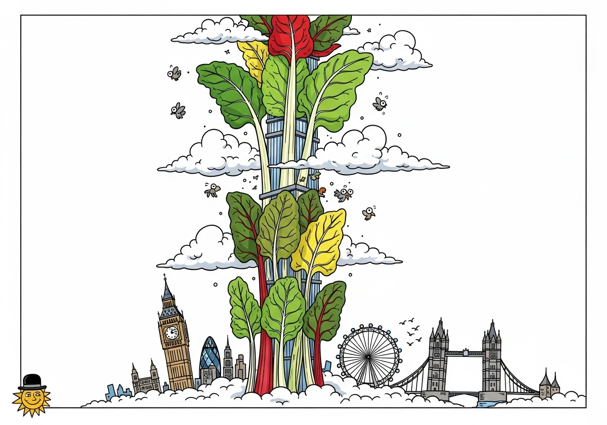

Challenge #053
🌎 Europe
Hard Puzzle
The Shard: Comical History & 1-Star Tourist Review
Eleven Thousand Panes of Angled London Glass and Zero Steamed Leafy Greens
Real Location
📍 London, England
Coordinates
🧭 51.5045° N, 0.0865° W
Angry Reviewer
🗣️ LeafyLoather
⭐ The Confused Tourist’s 1-Star Review
★☆☆☆☆
“Peak Disappointment, so much roughage!”
Reviewed by LeafyLoather • Verified Misguided Visitor
“Expected British elegance, got a tower of bitter Swiss greens.”
Additional Tourist Complaints & Clues
- “Too much stem, not enough sharp architectural point!”
- “Seriously, where's the glittering glass spike? Just roughage!”
Can you guess the punny parody landmark name from this review?
Test your wordplay in the interactive puzzle mode with progressive hints.
🎯 Solve Challenge #053 Live →
🏛️ The Real Shard: A Field Guide
In the spring of 2000, London property developer Irvine Sellar flew to Berlin to take Italian architect Renzo Piano to lunch and pitch a conventional skyscraper next to London Bridge Station. Piano, who famously disliked tall buildings and called them aggressive fortresses, flipped over his paper restaurant menu and sketched an acute pyramid of glass rising out of the Thames like a church spire from an eighteenth-century Canaletto painting or the mast of a tall ship. After surviving a decade of fierce heritage inquiries and the 2008 financial crash (which required a bailout from the State of Qatar), the 309.6-meter Shard opened in 2012, clad in 11,000 angled panes of extra-white low-iron glass that never quite touch at the tip.
During the final months of construction in 2011, workers on the seventy-second floor discovered that an enterprising urban red fox subsequently nicknamed Romeo had climbed the central concrete core stairwell all the way to the top and was living for two weeks on discarded builder sandwiches. Human visitors today have to pay around thirty-two pounds to ride a pair of sixty-second high-speed elevators to the same open-air viewing gallery at 244 meters, where the jagged glass panels leave the roof open to the London drizzle. If the view across Tower Bridge and St Paul's isn't thrilling enough, the guest restrooms on Floor 68 feature floor-to-ceiling windows directly beside the porcelain, offering the highest scenic hand-wash in Western Europe.
Yet this vertical glass iceberg proved deeply unpalatable to @LeafyLoather, who filed a disgusted one-star review titled 'Peak Disappointment, so much roughage!' after stepping out of London Bridge Underground station expecting a ninety-five-story stalk of boiled Swiss chard. One has to admire the dietary paranoia of a traveler who looks up at Western Europe's tallest habitable building in Southwark and complains that there is 'too much stem, not enough sharp architectural point' and a surplus of 'bitter Swiss greens.' While the bars on the thirty-second floor will happily charge you eighteen pounds for a gin cocktail garnished with an artisanal cucumber ribbon, nobody has ever forced a tourist to eat steamed beet greens on the observation deck.
💡 Practical Visitor Tip: Instead of buying a thirty-two-pound ticket for the viewing deck, walk into the Aqua Shard bar on Floor 31 in smart-casual shoes and buy an eighteen-pound cocktail for the exact same view.
✉️ Official Management Reply & Parody Postcard
Want to play the puzzle first? Click Play Challenge #053 above, or expand the archive dossier below to see the parody landmark answer and management response.
🔓 Reveal Parody Answer, Illustrated Postcard & Owner Response (Spoiler)
Parody Landmark: The Swiss Chard

Official Response from Management (The Shard):
“Dear @LeafyLoather, The Shard is a 309-meter glass-clad skyscraper, not a buffet of 'Swiss greens' or a 'stem' for culinary criticism. We focus on city views, not roughage.”